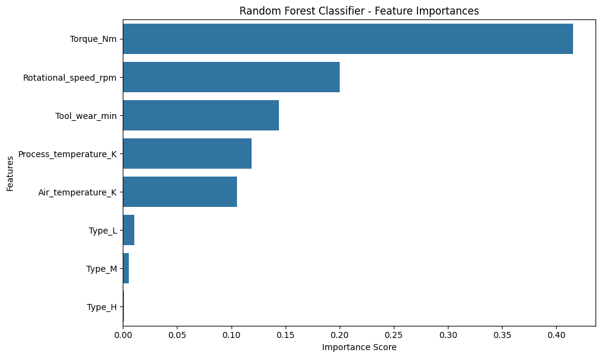
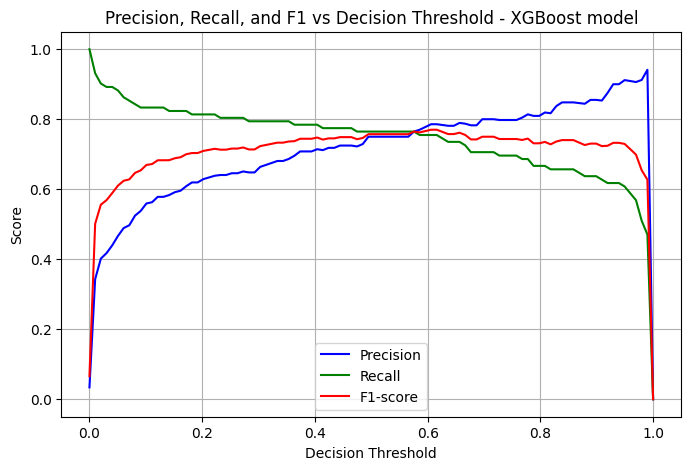
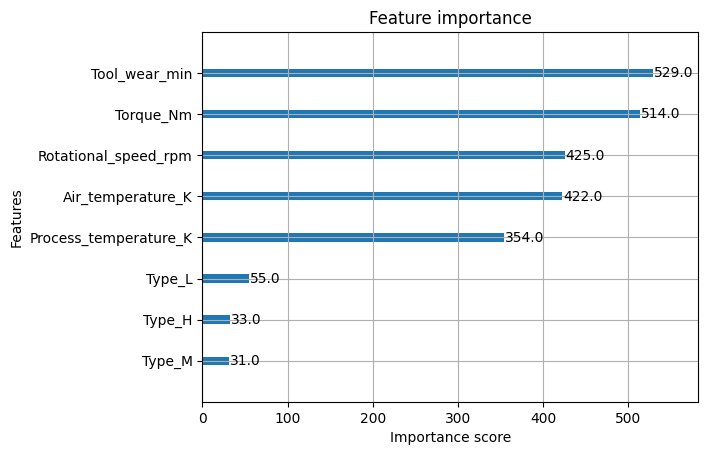
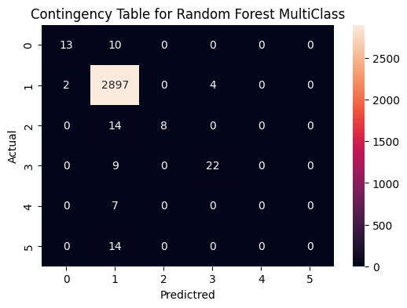
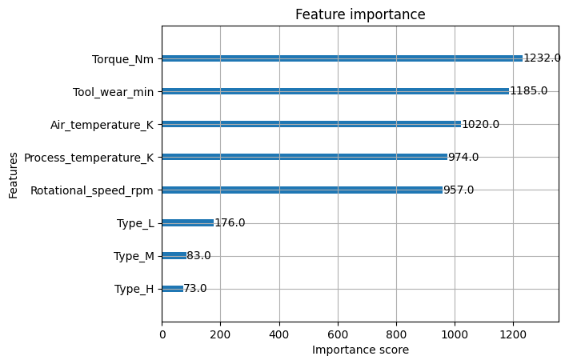
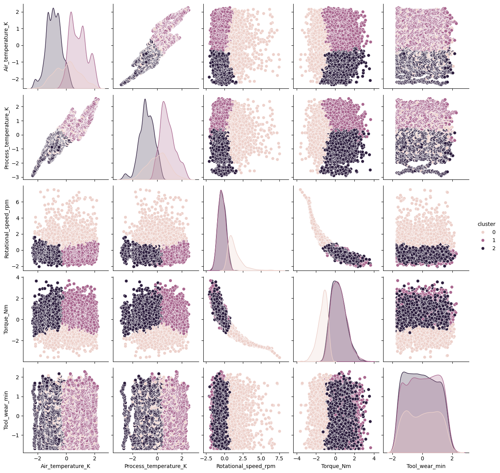

import pandas as pd
import numpy as np
import matplotlib.pyplot as plt
import seaborn as sns
from sklearn.model_selection import train_test_split
from sklearn.ensemble import RandomForestClassifier
from sklearn.linear_model import LogisticRegression
from sklearn.metrics import accuracy_score, roc_auc_score, mean_squared_error, f1_score, precision_score, recall_score
from sklearn.model_selection import cross_validate
import warnings
# Ignore all warnings
warnings.filterwarnings('ignore')Model Training Defect Detection
Date: 08/11/2025
Data Preparation
# Read already prepared dataset
mfg_df = pd.read_csv('..\data\processed\predictive_maintenance_ready.csv')# Replace [] on column names as some libraries have problems with these.
mfg_df.columns = mfg_df.columns.str.replace('[\[\]<>]', '', regex=True).astype(str)
mfg_df.columns = mfg_df.columns.str.replace(' ', '_').astype(str)
mfg_df.head()| Air_temperature_K | Process_temperature_K | Rotational_speed_rpm | Torque_Nm | Tool_wear_min | Target | FailureType_encoded | Type_H | Type_L | Type_M | |
|---|---|---|---|---|---|---|---|---|---|---|
| 0 | -0.952389 | -0.947360 | 0.068185 | 0.282200 | -1.695984 | 0 | 1 | False | False | True |
| 1 | -0.902393 | -0.879959 | -0.729472 | 0.633308 | -1.648852 | 0 | 1 | False | True | False |
| 2 | -0.952389 | -1.014761 | -0.227450 | 0.944290 | -1.617430 | 0 | 1 | False | True | False |
| 3 | -0.902393 | -0.947360 | -0.590021 | -0.048845 | -1.586009 | 0 | 1 | False | True | False |
| 4 | -0.902393 | -0.879959 | -0.729472 | 0.001313 | -1.554588 | 0 | 1 | False | True | False |
# Separate target columns and features
X =mfg_df.drop(columns=['Target','FailureType_encoded'],axis=1)
y0 = mfg_df['Target']
y1 = mfg_df['FailureType_encoded']Split data for training and testing
X_train, X_test, y_train, y_test = train_test_split(X, y0, stratify=y0, test_size=0.3, random_state=42)#Data is highly imbalanced
print(f'Total fails: {y0.sum()} out of total data points {len(y0)}')Total fails: 339 out of total data points 10000Commonly manufacturing data for defects is very imbalanced as yields are typically high
Model Training and Comparison
# Will Try Multiple Models based on some research
# Rerference: https://github.com/dataprofessor/code/blob/master/python/comparing-classifiers.ipynb
from sklearn.neural_network import MLPClassifier
from sklearn.neighbors import KNeighborsClassifier
from sklearn.svm import SVC
from sklearn.gaussian_process import GaussianProcessClassifier
from sklearn.ensemble import GradientBoostingClassifier
from sklearn.gaussian_process.kernels import RBF
from sklearn.tree import DecisionTreeClassifier
from sklearn.ensemble import ExtraTreesClassifier
from sklearn.ensemble import RandomForestClassifier, AdaBoostClassifier
from sklearn.naive_bayes import GaussianNB
from sklearn.discriminant_analysis import QuadraticDiscriminantAnalysis
from sklearn.linear_model import SGDClassifier
from sklearn.ensemble import BaggingClassifier
from sklearn.linear_model import LogisticRegressionnames = ["Nearest_Neighbors", "Gradient_Boosting", "Decision_Tree",
"Extra_Trees", "Random_Forest", "Neural_Net", "AdaBoost",
"Naive_Bayes", "QDA",'LogisticRegression']
classifiers = [
KNeighborsClassifier(3),
GradientBoostingClassifier(n_estimators=100, learning_rate=1.0),
DecisionTreeClassifier(max_depth=5),
ExtraTreesClassifier(n_estimators=10, min_samples_split=2),
RandomForestClassifier(random_state=42),
MLPClassifier(alpha=1, max_iter=1000),
AdaBoostClassifier(n_estimators=100),
GaussianNB(),
QuadraticDiscriminantAnalysis(),
LogisticRegression(random_state=42)
]scores = []
metric = roc_auc_score
for name, clf in zip(names, classifiers):
clf.fit(X_train, y_train)
score = clf.score(X_test, y_test)
y_pred = clf.predict(X_test)
y_prob = clf.predict_proba(X_test)[:,1]
rscore = metric(y_test, y_prob)
scores.append(rscore)
#https://github.com/dataprofessor/code/blob/master/python/comparing-classifiers.ipynb
df = pd.DataFrame()
df['name'] = names
df['ROC_AUC'] = scores
df| name | ROC_AUC | |
|---|---|---|
| 0 | Nearest_Neighbors | 0.784725 |
| 1 | Gradient_Boosting | 0.820843 |
| 2 | Decision_Tree | 0.932831 |
| 3 | Extra_Trees | 0.906656 |
| 4 | Random_Forest | 0.972481 |
| 5 | Neural_Net | 0.917803 |
| 6 | AdaBoost | 0.899753 |
| 7 | Naive_Bayes | 0.827014 |
| 8 | QDA | 0.838547 |
| 9 | LogisticRegression | 0.880628 |
ROC AUC Scores are high for majority of the models evaluated
scores = []
metric = f1_score
for name, clf in zip(names, classifiers):
clf.fit(X_train, y_train)
score = clf.score(X_test, y_test)
y_pred = clf.predict(X_test)
y_prob = clf.predict_proba(X_test)[:,1]
rscore = metric(y_test, y_pred)
scores.append(rscore)
#https://github.com/dataprofessor/code/blob/master/python/comparing-classifiers.ipynb
df = pd.DataFrame()
df['name'] = names
df['f1 score'] = scores
df| name | f1 score | |
|---|---|---|
| 0 | Nearest_Neighbors | 0.423077 |
| 1 | Gradient_Boosting | 0.513966 |
| 2 | Decision_Tree | 0.503145 |
| 3 | Extra_Trees | 0.422535 |
| 4 | Random_Forest | 0.567742 |
| 5 | Neural_Net | 0.214876 |
| 6 | AdaBoost | 0.473373 |
| 7 | Naive_Bayes | 0.198758 |
| 8 | QDA | 0.278788 |
| 9 | LogisticRegression | 0.224000 |
F1 Score on the other side are not as high, indicating models can predict one class (the majority) but not great when predicting the target/fails.
Hyperparemeter Tunning for Random Forest
Method #1: using GridSearchCV
from sklearn.model_selection import GridSearchCV
# Basic Model
rf = RandomForestClassifier(random_state=42)
# Random Parameters
param_grid = {
'n_estimators': [50, 250, 500],
'max_depth': [5, 10, 20],
'min_samples_split': [5, 15, 30],
'min_samples_leaf': [5, 10, 30],
'max_features': ['auto', 'sqrt', 'log2']
}
grid_search = GridSearchCV(
estimator=rf,
param_grid=param_grid,
cv=5, # 5-fold cross-validation
scoring='f1', # Focus on F1 score as trying to improve for the target 1 prediction.
n_jobs=-1,
verbose=1
)
grid_search.fit(X_train, y_train)
# Best model and parameters
print("Best Parameters:", grid_search.best_params_)
print("Best Cross-Validation f1:", grid_search.best_score_)Fitting 5 folds for each of 243 candidates, totalling 1215 fits
Best Parameters: {'max_depth': 20, 'max_features': 'log2', 'min_samples_leaf': 5, 'min_samples_split': 5, 'n_estimators': 250}
Best Cross-Validation f1: 0.635791532822667Method #2: RandomizedSearchCV
from sklearn.model_selection import RandomizedSearchCV
from scipy.stats import randint, uniform
param_dist = {
'n_estimators': randint(50, 500),
'max_depth': randint(1, 20),
'min_samples_split': randint(2, 20),
'min_samples_leaf': randint(1, 20),
'max_features': ['auto', 'sqrt', 'log2']
}
rf = RandomForestClassifier()
rand_search = RandomizedSearchCV(rf, param_distributions=param_dist, n_iter=20, cv=5,scoring='f1')
rand_search.fit(X_train, y_train)
print('Best hyperparameters:', rand_search.best_params_)Best hyperparameters: {'max_depth': 14, 'max_features': 'log2', 'min_samples_leaf': 8, 'min_samples_split': 16, 'n_estimators': 280}Select using judment based on the results from 2 methods
def randomforest(X, y,X1, y1):
model = RandomForestClassifier(n_estimators=50,
max_depth=10,
random_state=42,
max_features='log2',
min_samples_leaf=5,
min_samples_split=5)
#model = RandomForestClassifier(random_state=42)
# Train the model
model.fit(X, y)
# Predictions
y_pred = model.predict(X1)
# Probabilities
probabilities = model.predict_proba(X1)[:,1]
# Use Probabilites for ROC AUC
metric = roc_auc_score
metric_name = "ROC AUC"
auc_score = metric(y1, probabilities)
print(f"RandomForestClassifier: {metric_name} on test dataset: {auc_score:.4f}")
# Use predictions for F1 Score.
metric = f1_score
metric_name = "f1 score"
precision_sc = metric(y1, y_pred)
print(f"RandomForestClassifier: {metric_name} on test dataset: {precision_sc:.4f}")
return model# Model Training
rf_model = randomforest(X_train,y_train,X_test,y_test)RandomForestClassifier: ROC AUC on test dataset: 0.9751
RandomForestClassifier: f1 score on test dataset: 0.6258Model Evaluation
#CrossValidation Function: will use to compare results between train and test data used during cross-validation to asses over-fitting.
def cross_validation_check(model,X,y):
scoring = ['accuracy', 'precision','recall','f1', 'roc_auc']
cv_results = cross_validate(model, X, y, cv=5, # 3-fold to make it faster
scoring=scoring,
return_train_score=True)
print(f"Cross validation results for Random Forest")
for key in iter(cv_results):
mean = cv_results[key].mean()
print(f"{key} Cross Validation results {mean:.2f}")
return cv_resultscv_results = cross_validation_check(rf_model,X,y0)Cross validation results for Random Forest
fit_time Cross Validation results 0.30
score_time Cross Validation results 0.02
test_accuracy Cross Validation results 0.90
train_accuracy Cross Validation results 0.99
test_precision Cross Validation results 0.69
train_precision Cross Validation results 0.97
test_recall Cross Validation results 0.46
train_recall Cross Validation results 0.72
test_f1 Cross Validation results 0.45
train_f1 Cross Validation results 0.83
test_roc_auc Cross Validation results 0.90
train_roc_auc Cross Validation results 1.00Model seems to be overfitting F1 score delta between train and test is high
from sklearn.metrics import confusion_matrix
y_pred = rf_model.predict(X_test)
rm = confusion_matrix(y_test,y_pred)
plt.figure(figsize=(6,4))
sns.heatmap(rm, annot=True, fmt='d')
plt.xlabel('Predictred')
plt.ylabel('Actual')
plt.title('Contingency Table for Random Forest')
plt.show()Precision is very low, dataset is highly unbalanced, which is normal on manufacturing processes.
# Plot the precision, recall and F1 for different thresholds to define prediction
# Probabilities based on trained model
y_proba = rf_model.predict_proba(X_test)[:, 1]
# Evaluate metrics for thresholds from 0 to 1
thresholds = np.linspace(0, 1, 100)
precisions, recalls, f1s = [], [], []
# check results for different thresholds.
for t in thresholds:
y_pred = (y_proba >= t).astype(int)
precisions.append(precision_score(y_test, y_pred, zero_division=0))
recalls.append(recall_score(y_test, y_pred))
f1s.append(f1_score(y_test, y_pred))
# 6. Plot precision, recall, F1 vs threshold
plt.figure(figsize=(8,5))
plt.plot(thresholds, precisions, label='Precision', color='b')
plt.plot(thresholds, recalls, label='Recall', color='g')
plt.plot(thresholds, f1s, label='F1-score', color='r')
plt.xlabel('Decision Threshold')
plt.ylabel('Score')
plt.title('Precision, Recall, and F1 vs Decision Threshold - Random Forest Model')
plt.legend()
plt.grid(True)
plt.show()# Creating new predictions based on optimal threshold based on previuos chart
y_proba = rf_model.predict_proba(X_test)[:, 1]
threshold = 0.28 #based on optmil F1 score
rf_preds_mod = (y_proba >= threshold).astype(int)
rm = confusion_matrix(y_test,rf_preds_mod)
plt.figure(figsize=(6,4))
sns.heatmap(rm, annot=True, fmt='d')
plt.xlabel('Predictred')
plt.ylabel('Actual')
plt.title('Contingency Table for Random Forest for 0.28 threshold')
plt.tight_layout()
plt.show()# Function to plot features of importance for Random Forest Model
def plot_feature_importances(importances, feature_names, model_type="Model"):
feature_importance_df = pd.DataFrame({'feature': feature_names, 'importance': importances})
feature_importance_df = feature_importance_df.sort_values('importance', ascending=False)
plt.figure(figsize=(10, 6))
sns.barplot(x='importance', y='feature', data=feature_importance_df)
plt.title(f'{model_type} - Feature Importances')
plt.xlabel('Importance Score')
plt.ylabel('Features')
plt.tight_layout()
plt.show()importances_rfm = rf_model.feature_importances_
importance_df_rfm = plot_feature_importances(importances_rfm, X_train.columns.to_list(), "Random Forest Classifier")
Handling imbalanced target
# Second Attemp using stratify sampling from train_test_split function
X_train2, X_test2, y_train2, y_test2 = train_test_split(X, y0, stratify=y0, test_size=0.3, random_state=42)rf_model_2 = randomforest(X_train2,y_train2,X_test2,y_test2)RandomForestClassifier: ROC AUC on test dataset: 0.9751
RandomForestClassifier: f1 score on test dataset: 0.6258Similar results compare to first RF model
# This attemp re-sampling
# Code Source: https://imbalanced-learn.org/stable/references/generated/imblearn.over_sampling.SMOTE.html
# Synthetic Minority Oversampling Technique (SMOTE)
from imblearn.over_sampling import SMOTE
from imblearn.pipeline import Pipeline
def randomforest_SMOTE(X, y,X1, y1):
model = Pipeline([
('smote', SMOTE(random_state=42)),
('rf', RandomForestClassifier(n_estimators=50, # Same hyperparameters as before
max_depth=10,
random_state=42,
max_features='log2',
min_samples_leaf=5,
min_samples_split=5))
])
# Train the model
model.fit(X, y)
y_pred = model.predict(X1)
probabilities = model.predict_proba(X1)[:,1]
metric = roc_auc_score
metric_name = "ROC AUC"
auc_score = metric(y1, probabilities)
print(f"RandomForestClassifier: {metric_name} on test dataset: {auc_score:.4f}")
metric = f1_score
metric_name = "f1 score"
precision_sc = metric(y1, y_pred)
print(f"RandomForestClassifier: {metric_name} on test dataset: {precision_sc:.4f}")
return modelrf_model_3 = randomforest_SMOTE(X_train2,y_train2,X_test2,y_test2)
results = cross_validation_check(rf_model_3,X,y0)RandomForestClassifier: ROC AUC on test dataset: 0.9743
RandomForestClassifier: f1 score on test dataset: 0.5311
Cross validation results for Random Forest
fit_time Cross Validation results 0.84
score_time Cross Validation results 0.02
test_accuracy Cross Validation results 0.87
train_accuracy Cross Validation results 0.97
test_precision Cross Validation results 0.32
train_precision Cross Validation results 0.55
test_recall Cross Validation results 0.71
train_recall Cross Validation results 0.98
test_f1 Cross Validation results 0.40
train_f1 Cross Validation results 0.70
test_roc_auc Cross Validation results 0.92
train_roc_auc Cross Validation results 1.00Worse Results when adding SMOTE - synthetic oversampling
# This attemp re-sampling
# Using Under Sampling
#Source: https://imbalanced-learn.org/stable/references/generated/imblearn.under_sampling.RandomUnderSampler.html
from imblearn.under_sampling import RandomUnderSampler
def randomforest_RuS(X, y,X1, y1):
model = Pipeline([
('rus', RandomUnderSampler(random_state=42,sampling_strategy=0.3)),
('rf', RandomForestClassifier(random_state=42))
])
#model = RandomForestClassifier(random_state=42)
# Train the model
model.fit(X, y)
y_pred = model.predict(X1)
probabilities = model.predict_proba(X1)[:,1]
metric = roc_auc_score
metric_name = "ROC AUC"
auc_score = metric(y1, probabilities)
print(f"RandomForestClassifier: {metric_name} on test dataset: {auc_score:.4f}")
metric = f1_score
metric_name = "f1 score"
precision_sc = metric(y1, y_pred)
print(f"RandomForestClassifier: {metric_name} on test dataset: {precision_sc:.4f}")
return modelrf_model_4 = randomforest_RuS(X_train2,y_train2,X_test2,y_test2)
results = cross_validation_check(rf_model_4,X,y0)RandomForestClassifier: ROC AUC on test dataset: 0.9646
RandomForestClassifier: f1 score on test dataset: 0.5306
Cross validation results for Random Forest
fit_time Cross Validation results 0.14
score_time Cross Validation results 0.02
test_accuracy Cross Validation results 0.87
train_accuracy Cross Validation results 0.97
test_precision Cross Validation results 0.33
train_precision Cross Validation results 0.50
test_recall Cross Validation results 0.76
train_recall Cross Validation results 1.00
test_f1 Cross Validation results 0.42
train_f1 Cross Validation results 0.67
test_roc_auc Cross Validation results 0.92
train_roc_auc Cross Validation results 1.00Not significant improvement with undersampling method
Second Method - XGBOOST
Source: https://xgboosting.com/xgboost-for-imbalanced-classification/
import xgboost as xgb
scale_pos_weight = (len(y0) - np.sum(y0)) / np.sum(y0) #Intent is to give more weight to the minority class (1s on this case)
xgmodel = xgb.XGBClassifier(
scale_pos_weight=scale_pos_weight,
use_label_encoder=False,
eval_metric='logloss',
random_state=42
)
xgmodel.fit(X_train, y_train)
y_pred = xgmodel.predict(X_test)
f1 = f1_score(y_test, y_pred)
print(f"F1 Score: {f1:.3f}")F1 Score: 0.757results = cross_validation_check(xgmodel,X_train,y_train)Cross validation results for Random Forest
fit_time Cross Validation results 0.12
score_time Cross Validation results 0.01
test_accuracy Cross Validation results 0.98
train_accuracy Cross Validation results 1.00
test_precision Cross Validation results 0.74
train_precision Cross Validation results 1.00
test_recall Cross Validation results 0.72
train_recall Cross Validation results 1.00
test_f1 Cross Validation results 0.73
train_f1 Cross Validation results 1.00
test_roc_auc Cross Validation results 0.97
train_roc_auc Cross Validation results 1.00Better results than Random Forest. Still there is some over-fitting on the model but less than RF
# Contingency Table
y_pred = xgmodel.predict(X_test)
rm = confusion_matrix(y_test,y_pred)
plt.figure(figsize=(6,4))
sns.heatmap(rm, annot=True, fmt='d')
plt.xlabel('Predictred')
plt.ylabel('Actual')
plt.title('Contingency Table for XGBoost with Sample Weighting')
plt.show()Testing if can improve model with hyperparameter tuning
# Same method as with Random Forest
param_dist = {
'max_depth': randint(3, 10),
'learning_rate': uniform(0.01, 0.3),
'n_estimators': randint(50, 300),
'subsample': uniform(0.5, 0.5),
'colsample_bytree': uniform(0.5, 0.5)
}
rand_search = RandomizedSearchCV(xgmodel, param_distributions=param_dist, n_iter=20, cv=5,scoring='f1')
rand_search.fit(X_train, y_train)
print('Best hyperparameters:', rand_search.best_params_)Best hyperparameters: {'colsample_bytree': np.float64(0.8426068608991865), 'learning_rate': np.float64(0.2589806507914076), 'max_depth': 5, 'n_estimators': 216, 'subsample': np.float64(0.9010342428678821)}xgmodel2 = xgb.XGBClassifier(
scale_pos_weight=scale_pos_weight,
use_label_encoder=False,
eval_metric='logloss',
random_state=42,
colsample_bytree=0.935,
learning_rate=0.134,
max_depth=8,
n_estimators=240,
subsample=0.8
)
xgmodel2.fit(X_train, y_train)
y_pred = xgmodel.predict(X_test)
f1 = f1_score(y_test, y_pred)
print(f"F1 Score: {f1:.3f}")F1 Score: 0.757Inital XGBoost model performed better
results = cross_validation_check(xgmodel2,X_train,y_train)Cross validation results for Random Forest
fit_time Cross Validation results 0.25
score_time Cross Validation results 0.02
test_accuracy Cross Validation results 0.98
train_accuracy Cross Validation results 1.00
test_precision Cross Validation results 0.76
train_precision Cross Validation results 1.00
test_recall Cross Validation results 0.71
train_recall Cross Validation results 1.00
test_f1 Cross Validation results 0.73
train_f1 Cross Validation results 1.00
test_roc_auc Cross Validation results 0.97
train_roc_auc Cross Validation results 1.00# Plot the precision, recall and F1 for different thresholds to define prediction
# Probabilities based on trained model
y_proba = xgmodel.predict_proba(X_test)[:, 1]
# Evaluate metrics for thresholds from 0 to 1
thresholds = np.linspace(0, 1, 100)
precisions, recalls, f1s = [], [], []
# check results for different thresholds.
for t in thresholds:
y_pred = (y_proba >= t).astype(int)
precisions.append(precision_score(y_test, y_pred, zero_division=0))
recalls.append(recall_score(y_test, y_pred))
f1s.append(f1_score(y_test, y_pred))
# 6. Plot precision, recall, F1 vs threshold
plt.figure(figsize=(8,5))
plt.plot(thresholds, precisions, label='Precision', color='b')
plt.plot(thresholds, recalls, label='Recall', color='g')
plt.plot(thresholds, f1s, label='F1-score', color='r')
plt.xlabel('Decision Threshold')
plt.ylabel('Score')
plt.title('Precision, Recall, and F1 vs Decision Threshold - XGBoost model')
plt.legend()
plt.grid(True)
plt.show()
from xgboost import plot_importance
plot_importance(xgmodel, importance_type='weight')
plt.show()
FAILURE TYPE PREDICTION
X_trainF, X_testF, y_trainF, y_testF = train_test_split(X, y1, test_size=0.3, random_state=42)def randomforest_m(X, y,X1, y1):
model = RandomForestClassifier(n_estimators=50,
max_depth=10,
random_state=42,
max_features='log2',
min_samples_leaf=5,
min_samples_split=5)
#model = RandomForestClassifier(random_state=42)
# Train the model
model.fit(X, y)
y_pred = model.predict(X1)
probabilities = model.predict_proba(X1)
metric_name = "ROC AUC"
auc_score = roc_auc_score(y1, probabilities, multi_class='ovr')
print(f"RandomForestClassifier: {metric_name} on test dataset: {auc_score:.4f}")
f1_macro = f1_score(y1, y_pred, average='macro')
f1_micro = f1_score(y1, y_pred, average='micro')
print(f"RandomForestClassifier: F1 Macro on test dataset: {f1_macro:.4f}")
print(f"RandomForestClassifier: F1 Micro on test dataset: {f1_micro:.4f}")
f1_per_class = f1_score(y1, y_pred, average=None)
print("F1 score per class:", f1_per_class)
return modelrfm_model = randomforest_m(X_trainF,y_trainF,X_testF,y_testF)RandomForestClassifier: ROC AUC on test dataset: 0.9009
RandomForestClassifier: F1 Macro on test dataset: 0.4965
RandomForestClassifier: F1 Micro on test dataset: 0.9800
F1 score per class: [0.68421053 0.9897506 0.53333333 0.77192982 0. 0. ]y_pred_m = rfm_model.predict(X_testF)
rm = confusion_matrix(y_testF,y_pred_m)
plt.figure(figsize=(6,4))
sns.heatmap(rm, annot=True, fmt='d')
plt.xlabel('Predictred')
plt.ylabel('Actual')
plt.title('Contingency Table for Random Forest MultiClass')
plt.show()
Class Names: ‘Heat Dissipation Failure’: 0, ‘No Failure’: 1, ‘Overstrain Failure’: 2, ‘Power Failure’: 3, ‘Random Failures’: 4, ‘Tool Wear Failure’: 5
classes, counts = np.unique(y_train, return_counts=True)
inv_freq = 1.0 / counts
class_weights = dict(zip(classes, inv_freq))
sample_weights = np.array([class_weights[label] for label in y_train])
xgmodelm = xgb.XGBClassifier(
sample_weight=sample_weights,
use_label_encoder=False,
eval_metric='logloss',
random_state=42
)
xgmodelm.fit(X_trainF, y_trainF)
y_pred = xgmodelm.predict(X_testF)
f1_per_class = f1_score(y_testF, y_pred, average=None)
print("F1 score per class:", f1_per_class)F1 score per class: [0.95652174 0.9936546 0.76190476 0.8 0. 0. ]rm = confusion_matrix(y_testF,y_pred)
plt.figure(figsize=(6,4))
sns.heatmap(rm, annot=True, fmt='d')
plt.xlabel('Predictred')
plt.ylabel('Actual')
plt.title('Contingency Table for XG Boost MultiClass')
plt.show()from xgboost import plot_importance
plot_importance(xgmodelm, importance_type='weight')
plt.show()
Clustering
# Will use only numeric columns for clustering
num_cols = X.select_dtypes(include="number").columns.to_list()
X_cl = X[num_cols]from sklearn.metrics import calinski_harabasz_score
from sklearn.cluster import KMeans
from matplotlib.ticker import MultipleLocator
#source: https://towardsdatascience.com/calinski-harabasz-index-for-k-means-clustering-evaluation-using-python-4fefeeb2988e/
results = {}
for i in range(2,20):
kmeans = KMeans(n_clusters=i, random_state=42)
labels = kmeans.fit_predict(X_cl)
db_index = calinski_harabasz_score(X_cl, labels)
results.update({i: db_index})
fig, ax = plt.subplots()
ax.plot(list(results.keys()), list(results.values()))
ax.xaxis.set_major_locator(MultipleLocator(1))
ax.grid(True)
ax.set_title('Calinski-Harabasz method to determine the optimal number of clusters')
ax.set_xlabel("Number of clusters")
ax.set_ylabel("Calinski-Harabasz Index")
plt.show()
kmeans = KMeans(n_clusters=3, random_state=42)
labels = kmeans.fit_predict(X_cl)
kmeans_labels = labelsplt_df = X_cl.copy()
plt_df['cluster'] = kmeans_labels
plt.figure(figsize=(10,6))
sns.pairplot(plt_df, diag_kind='kde', hue='cluster')
plt.show()<Figure size 1000x600 with 0 Axes>
# Create new feature calculating the distance to the center of the cluster
all_distances = kmeans.transform(X_cl)
assigned_distances = all_distances[np.arange(len(X_cl)), labels]
X['dist_cluster_center'] = assigned_distances
X.head()| Air_temperature_K | Process_temperature_K | Rotational_speed_rpm | Torque_Nm | Tool_wear_min | Type_H | Type_L | Type_M | dist_cluster_center | |
|---|---|---|---|---|---|---|---|---|---|
| 0 | -0.952389 | -0.947360 | 0.068185 | 0.282200 | -1.695984 | False | False | True | 1.707273 |
| 1 | -0.902393 | -0.879959 | -0.729472 | 0.633308 | -1.648852 | False | True | False | 1.671828 |
| 2 | -0.952389 | -1.014761 | -0.227450 | 0.944290 | -1.617430 | False | True | False | 1.700837 |
| 3 | -0.902393 | -0.947360 | -0.590021 | -0.048845 | -1.586009 | False | True | False | 1.602883 |
| 4 | -0.902393 | -0.879959 | -0.729472 | 0.001313 | -1.554588 | False | True | False | 1.585680 |
X_traink, X_testk, y_traink, y_testk = train_test_split(X, y0, stratify=y0, test_size=0.3, random_state=42)scale_pos_weight = (len(y0) - np.sum(y0)) / np.sum(y0) #Intent is to give more weight to the minority class (1s on this case)
xgmodel_k = xgb.XGBClassifier(
scale_pos_weight=scale_pos_weight,
use_label_encoder=False,
eval_metric='logloss',
random_state=42
)
xgmodel_k.fit(X_traink, y_traink)
y_pred_k = xgmodel_k.predict(X_testk)
f1 = f1_score(y_testk, y_pred_k)
print(f"F1 Score: {f1:.3f}")F1 Score: 0.745